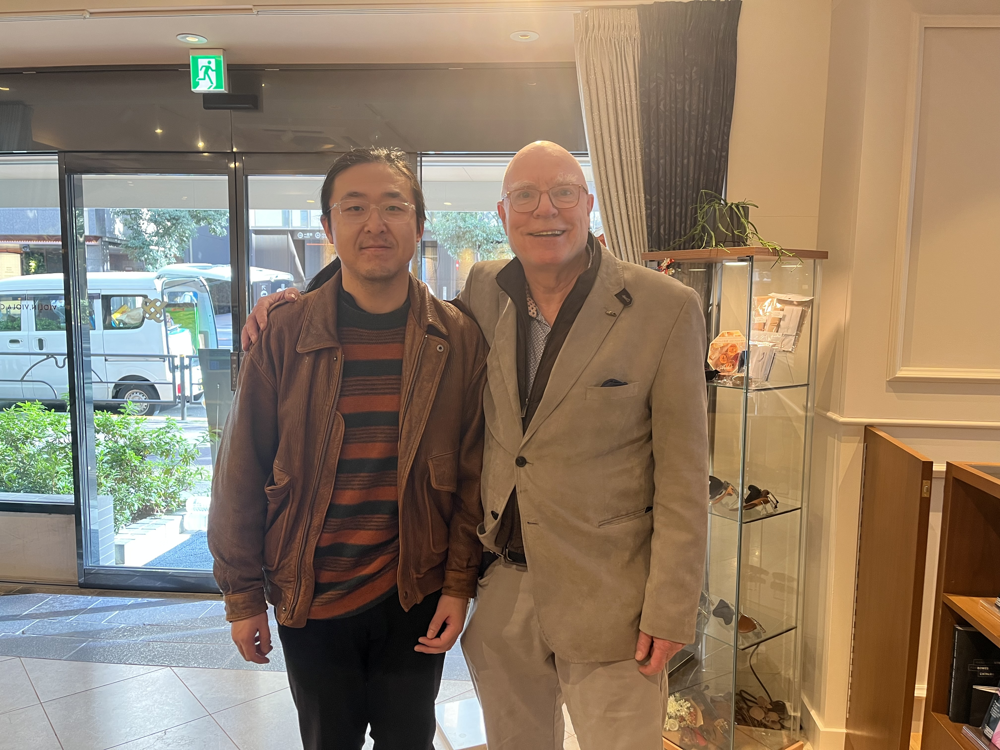

Fei Gao — Miscellany
This page is for notes and reflections beyond academia.
Photos

Had a surprise meeting with Jensen Hansen at Bunkyo-Gakki on December 10, 2025. Jensen Hansen is not only a renowned cellist but also a great cello educator and author of "Cello Mind." He is one of my biggest cello idols, and I was thrilled to meet him in person and have this opportunity to connect with such an inspiring musician.
TWICE
- The Osaka This Is For concerts were the best. Dubu performed her solo in front of my seat on the second day!!
- I have met many Osaka ONCE during the concerts and had a great time with them.
- I have arranged TWICE's songs into string quartets (twice).
- String Quartet Arrangements:
- "You Make Me Feel Special" - MIDI | Score (PDF)
- If you need music in 4 parts, please contact me.
NMIXX
- NMIXX Tokyo Encore Concerts
- I spent wonderful time at 2-day NMIXX Tokyo Encore Concert. Lily sent me a hand love on Saturday and a fly kiss on Sunday. It was moving and thrilling.
- Members were cute and beautiful. Sullyoon's first day cody was so cute. Bae was slaying on the stage.
- I am so happy with meeting many NSWERs.
- Camera is allowed in a few of minutes during the concerts. See Some Pictures
Coffee
- I drink a lot of coffee — typically 15–25 grams of beans a day.
- My favorite supplier in Japan is: namamame.jp (not sponsored).
- Current favorite bean: パストーレス ピーベリー
- My recipe now: 1:18 drip ratio.
Mountains
- I love mountain climbing and hiking.
- I hiked Mount Yōtei last year. Here are some pictures from the trip: View Photos